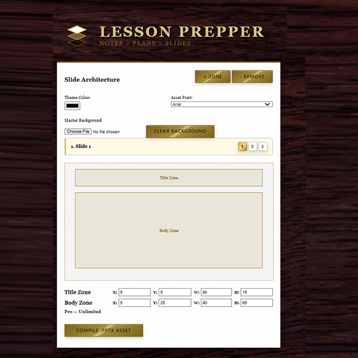
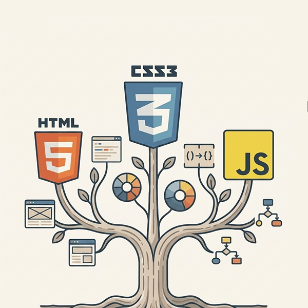

I build assessment and curriculum tools that load fast—even on low-tech devices over 3G.
I'm a frontend architect and ESL teacher working in Cambodia. For two and a half years I've been designing EdTech tools that load fast—even on low-tech devices over 3G. I spent two decades building checkout flows for global retail brands and accessibility systems for healthcare vendors. Now I apply that same discipline to classrooms where every kilobyte matters. The through-line: I care about interfaces that respect the user's context—whether that's a rural student or a senior trying to make crucial health decisions. I work vanilla-first because complexity is a tax, and most classrooms can't afford it.

How I Build
Vanilla-First
I start with HTML, CSS, and vanilla JavaScript. I only add a framework when staying vanilla becomes more expensive than adopting one. The tools I make run on old laptops, cheap tablets, and spotty connections.
AI-Trained, Not AI-Dependent
My AI agents are shaped by the thinking of genuine experts—my personal career mentors and giants in the industry. When I use AI to assist me, it's not allowed to hand me bloated, over-engineered, framework-heavy code.
Classroom-Tested
Everything educational software I make is tested with real Khmer learners, in real classrooms, under real constraints.
Selected Work

IELTS Speaking Evaluator
I built a Progressive Web App that allows IELTS evaluators to conduct speaking assessments in class. It band-caps and surfaces fluency gaps in real time.

Lesson Prepper
Evolved from a Google Gem + Python script into one pipeline: text → structured lesson plan → customizable slide layout → editable PowerPoint. Saves me 20+ hours of prep time per week. If you're working on similar issues, ask me about it.

Web Dev Fundamentals
A full multi-week syllabus teaching HTML5, CSS3, and JavaScript to secondary students or adult learners. Written by someone who worked in front-end before the end of the browser wars. Project-based, no prior experience needed.
Notes
Why I Teach Fundamentals, Not Frameworks
Students learning to code need to see causality: write a line, watch the div change. Frameworks hide the very concepts I want them to understand. I start with vanilla JS and the DOM.
ReadThe 3G Classroom
"Low-bandwidth" means every dependency you ship is weight someone else's device has to carry. I treat kilobytes like currency.
ReadFrom Checkout Flows to IELTS Rubrics
What retail UX taught me about assessment design: the user is always time-constrained, and always one confusing screen away from abandoning the task. The same principles apply.
ReadWhat I'm Building Now
Currently working on cracking the code on a Khmer-focused grammar tutoring tool and refining my IELTS evaluator for broader deployment. Digging into how AI-assisted assessment can work offline in low-connectivity classrooms.
Documents & Demos
Resume, syllabi, and live tool demos for review.
If you're building EdTech, assessment systems, or low-bandwidth tools, I build things that add value — and I like talking to people who build things too.
I don't sell ideas without proof—I build things that add value, and I like talking to people who build things too.
jeremy.ivy@gmail.com trending_flat